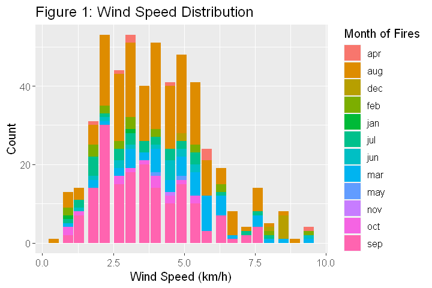
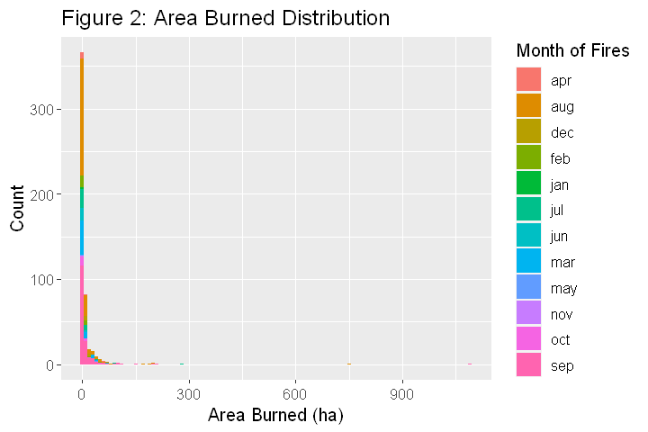

Preliminary Results
Contents
Preliminary Results#
# Load the necessary packages.
library(tidyverse)
library(infer)
library(cowplot)
library(broom)
#Setting the seed.
set.seed(1234)
#Dowloading the data from the web and reading it in R.
url <- "https://archive.ics.uci.edu/ml/machine-learning-databases/forest-fires/forestfires.csv"
download.file (url,"../data/forestfires.csv" )
forest_fires_data <-read_delim("../data/forestfires.csv", skip=0, delim=",") %>%
select(month, wind, area) %>%
mutate(month = as.factor(month), wind = as.numeric(wind), area = as.numeric(area)) %>% #Wrangling data and selecting columns to be used in prediction
filter(!is.na(month) | !is.na(wind) | !is.na(area))
head(forest_fires_data)
| month | wind | area |
|---|---|---|
| <fct> | <dbl> | <dbl> |
| mar | 6.7 | 0 |
| oct | 0.9 | 0 |
| oct | 1.3 | 0 |
| mar | 4.0 | 0 |
| mar | 1.8 | 0 |
| aug | 5.4 | 0 |
Table 1: Top 6 Rows of Forest Fires Data#
#Visualizing the summary of the predictor variables.
print(summary(forest_fires_data))
month wind area
aug :184 Min. :0.400 Min. : 0.00
sep :172 1st Qu.:2.700 1st Qu.: 0.00
mar : 54 Median :4.000 Median : 0.52
jul : 32 Mean :4.018 Mean : 12.85
feb : 20 3rd Qu.:4.900 3rd Qu.: 6.57
jun : 17 Max. :9.400 Max. :1090.84
(Other): 38
Table 2: Summary Statistics of Forest Fires Data#
options(repr.plot.width = 6, repr.plot.height = 4)
#Visualizing the distribution of each variable
plot_1 <- forest_fires_data %>%
ggplot(aes(x = wind, fill = month))+
geom_bar(binwidth = 10) +
labs(x="Wind Speed (km/h)", y="Count")+
ggtitle("Figure 1: Wind Speed Distribution") +
scale_fill_discrete(name = "Month of Fires")+
theme(text = element_text(size = 12))
plot_1
plot_2 <- forest_fires_data %>%
ggplot(aes(x =area, fill = month))+
geom_histogram(binwidth = 10) +
labs(x="Area Burned (ha)", y="Count")+
ggtitle("Figure 2: Area Burned Distribution") +
scale_fill_discrete(name = "Month of Fires")+
theme(text = element_text(size = 12))
plot_2

